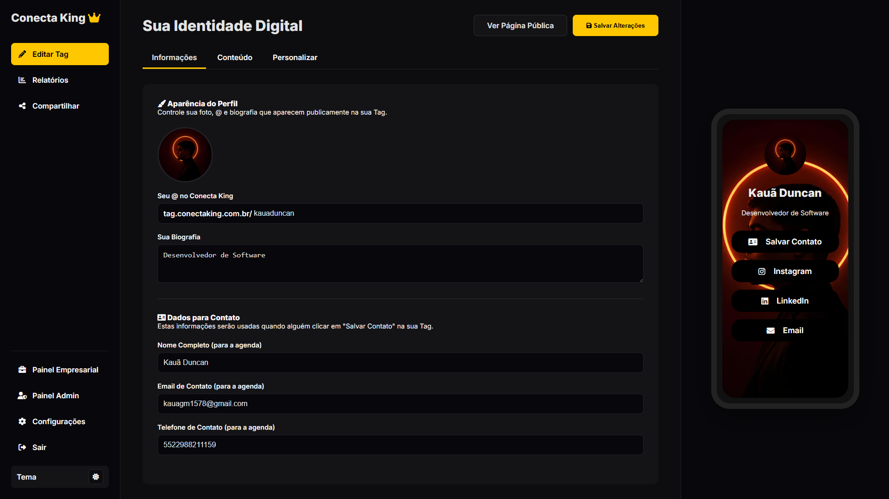
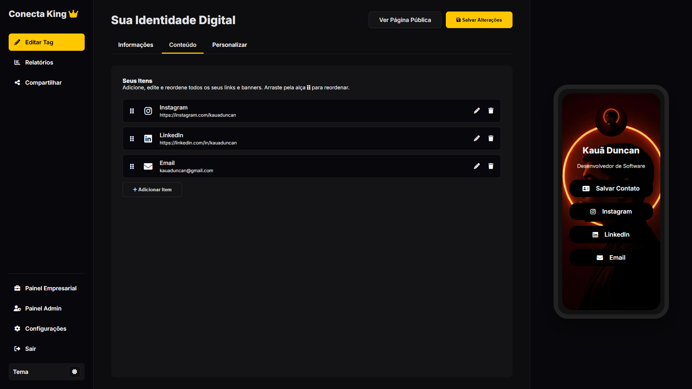
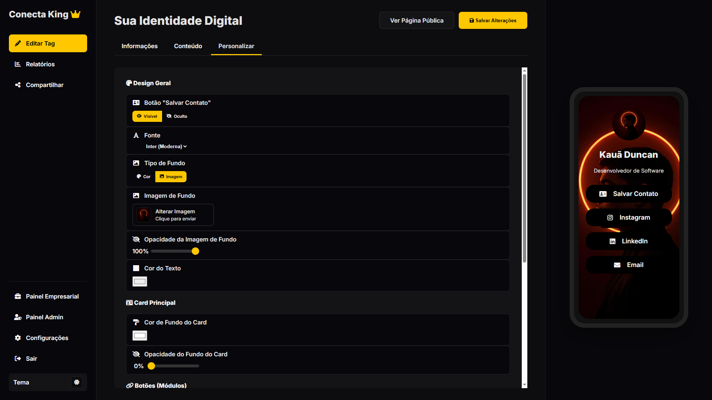
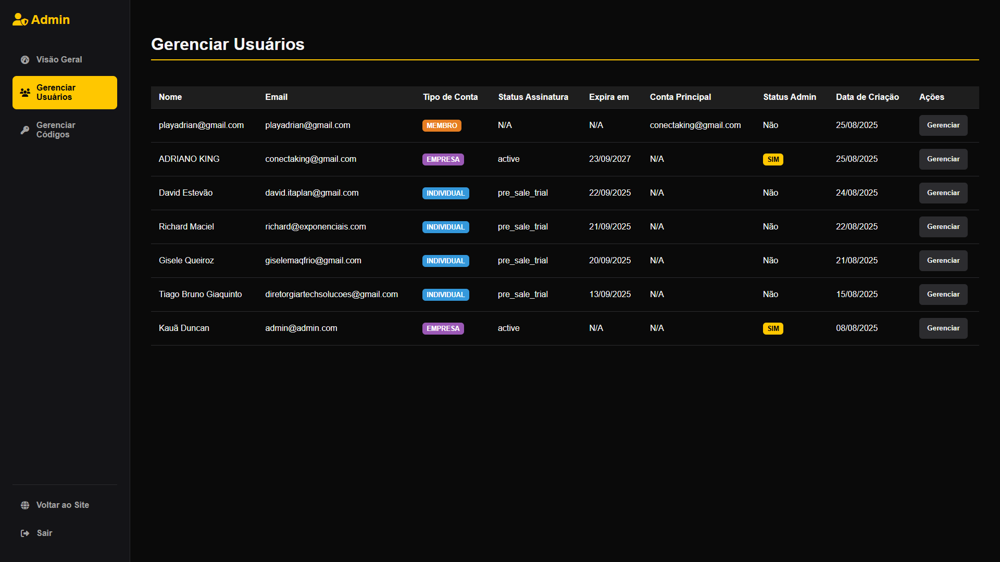
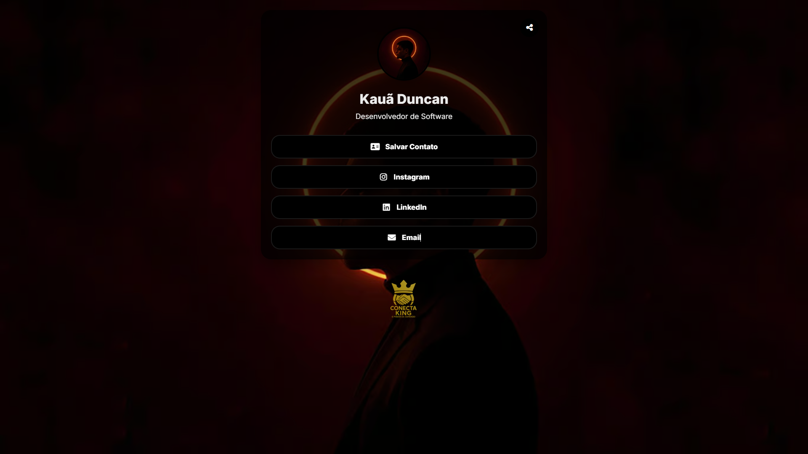
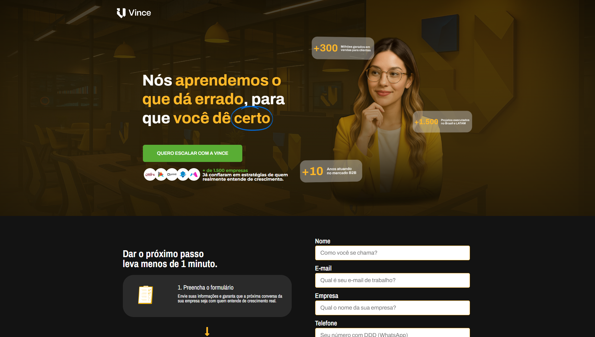
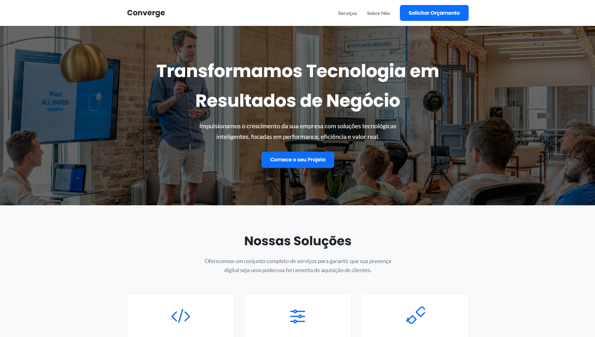

Olá, sou Kauã Duncan.
Desenvolvedor especialista em transformar design em Landing Pages e Sites de alta conversão.
Projetos em Destaque





Conecta King (Software as a Service)
Plataforma completa de cartões de visita digitais, desenvolvida com frontend em HTML/CSS/JS puro e backend robusto em Node.js com banco de dados PostgreSQL.
Solução Full-Stack com Painel Admin e de Cliente

Landing Page para Agência
Desenvolvimento de uma LP para agência de marketing, com objetivo de fortalecer a presença digital da agência e valorizar ainda mais os serviços que ela oferece.
+45% na taxa de conversão

Site Institucional B2B
Redesenvolvimento completo para uma empresa de tecnologia, com foco em UX e geração de orçamentos.
+30% em pedidos de orçamento